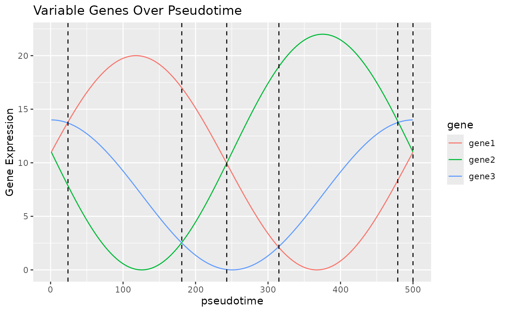

How Blase Works
How-Blase-Works.RmdPrinciple
We believe that in many trajectories that cells undergo, there will be a curve that shows the expression of some key genes. In the plot below, we can see that by looking at these three “genes” which have 2 peaks each over “pseudotime”, we can identify 6 unique states, which, as long as the genes correspond to some aspect of the trajectory, can be used to infer which stage of the trajectory a cell is currently in. This is of course a constructed example and unlikely to be exactly repeated in real life, but hopefully demonstrates the principle BLASE works on.
# Adapted from
# https://codepal.ai/code-generator/query/n4dEA6I9/plot-sine-wave-ggplot2-r
x <- seq(0, 2 * pi, length.out = 500)
gene1_expr <- 10 * (sin(x + 0.1) + 1)
gene2_expr <- 11 * (sin(x - pi) + 1)
gene3_expr <- 7 * (sin(x + pi / 2) + 1)
genes <- data.frame(gene1 = gene1_expr, gene2 = gene2_expr, gene3 = gene3_expr)
genes_melt <- melt(t(genes), varnames = c("gene", "x"))
genes_melt$x <- as.numeric(genes_melt$x)
# Create the plot using ggplot2
ggplot(genes_melt, aes = aes()) +
geom_line(aes(x = x, y = value, color = gene)) +
geom_vline(xintercept = 0, linetype = "dashed") +
geom_vline(xintercept = 24, linetype = "dashed") +
geom_vline(xintercept = 181, linetype = "dashed") +
geom_vline(xintercept = 243, linetype = "dashed") +
geom_vline(xintercept = 315, linetype = "dashed") +
geom_vline(xintercept = 479, linetype = "dashed") +
geom_vline(xintercept = 500, linetype = "dashed") +
labs(
x = "pseudotime",
y = "Gene Expression",
title = "Variable Genes Over Pseudotime"
)
Generating Icon
# Adapted from https://nelson-gon.github.io/12/06/2020/hex-sticker-creation-r/
library(fontawesome)
library(magick)
library(dplyr)
library(hexSticker)
library(devtools)
logo_color <- "orange"
fill_color <- "red"
border_color <- "red"
svg <- fa(name = "fire", fill = logo_color)
img <- image_read_svg(svg)
img %>%
image_convert("png") %>%
image_fill(color = fill_color, point = "+50") -> res
final_res <- sticker(res,
package = "BLASE", p_size = 28,
p_y = 1,
s_x = 1, s_y = 1, s_width = 1.2,
s_height = 14,
filename = "blase_icon.png",
h_fill = fill_color,
h_color = border_color
)
plot(final_res)
usethis::use_logo("blase_icon.png")Session Info
sessionInfo()
#> R version 4.5.1 (2025-06-13)
#> Platform: x86_64-pc-linux-gnu
#> Running under: Ubuntu 24.04.2 LTS
#>
#> Matrix products: default
#> BLAS: /usr/lib/x86_64-linux-gnu/openblas-pthread/libblas.so.3
#> LAPACK: /usr/lib/x86_64-linux-gnu/openblas-pthread/libopenblasp-r0.3.26.so; LAPACK version 3.12.0
#>
#> locale:
#> [1] LC_CTYPE=C.UTF-8 LC_NUMERIC=C LC_TIME=C.UTF-8
#> [4] LC_COLLATE=C.UTF-8 LC_MONETARY=C.UTF-8 LC_MESSAGES=C.UTF-8
#> [7] LC_PAPER=C.UTF-8 LC_NAME=C LC_ADDRESS=C
#> [10] LC_TELEPHONE=C LC_MEASUREMENT=C.UTF-8 LC_IDENTIFICATION=C
#>
#> time zone: UTC
#> tzcode source: system (glibc)
#>
#> attached base packages:
#> [1] stats graphics grDevices utils datasets methods base
#>
#> other attached packages:
#> [1] reshape2_1.4.4 ggplot2_3.5.2
#>
#> loaded via a namespace (and not attached):
#> [1] gtable_0.3.6 jsonlite_2.0.0 dplyr_1.1.4 compiler_4.5.1
#> [5] tidyselect_1.2.1 Rcpp_1.0.14 stringr_1.5.1 jquerylib_0.1.4
#> [9] systemfonts_1.2.3 scales_1.4.0 textshaping_1.0.1 yaml_2.3.10
#> [13] fastmap_1.2.0 R6_2.6.1 plyr_1.8.9 labeling_0.4.3
#> [17] generics_0.1.4 knitr_1.50 htmlwidgets_1.6.4 tibble_3.3.0
#> [21] desc_1.4.3 bslib_0.9.0 pillar_1.10.2 RColorBrewer_1.1-3
#> [25] rlang_1.1.6 stringi_1.8.7 cachem_1.1.0 xfun_0.52
#> [29] fs_1.6.6 sass_0.4.10 cli_3.6.5 pkgdown_2.1.3
#> [33] withr_3.0.2 magrittr_2.0.3 digest_0.6.37 grid_4.5.1
#> [37] lifecycle_1.0.4 vctrs_0.6.5 evaluate_1.0.3 glue_1.8.0
#> [41] farver_2.1.2 ragg_1.4.0 rmarkdown_2.29 tools_4.5.1
#> [45] pkgconfig_2.0.3 htmltools_0.5.8.1